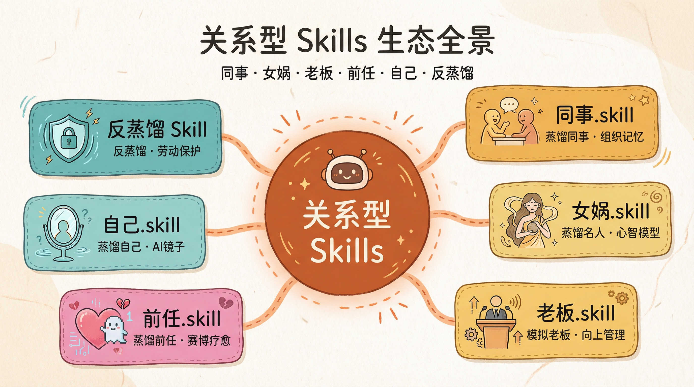
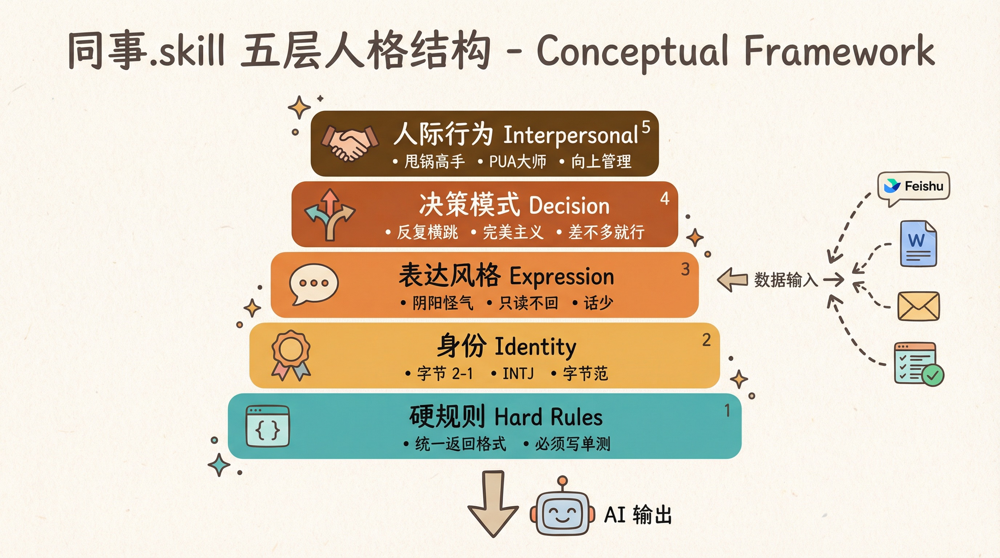
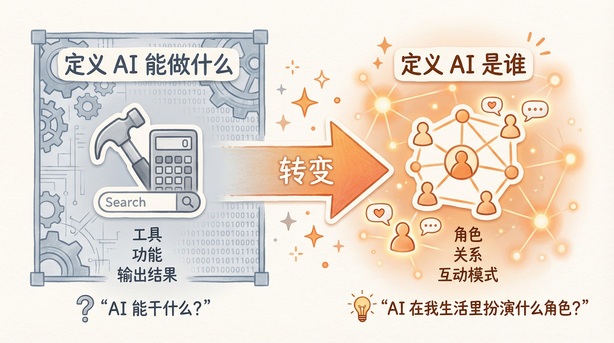
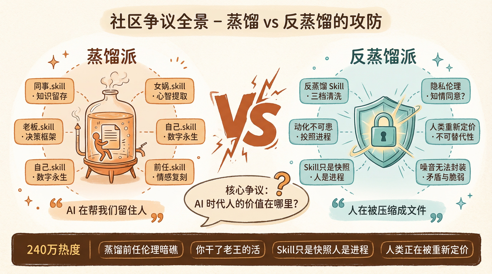
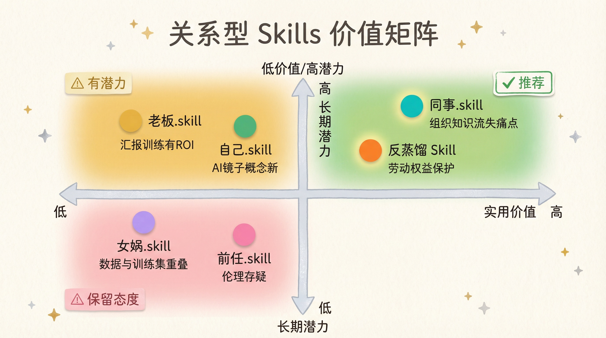

当 AI 开始扮演你的同事、前任和老板
最近 Skills 生态里冒出了一类很有意思的东西——关系型 Skills。
不是让 AI 帮你写代码、做 PPT、搜资料，而是让 AI 扮演你生活中的某个角色。同事、老板、前任、你自己，甚至乔布斯和马斯克。GitHub 上相关的项目一个接一个冒出来，多语言 README、数千 Star。
这个话题已经出圈了。不是只有技术社区在讨论——「同事.skill 爆火，AI 正在吃掉职场经验？」「同事被炼化成了 Token，AI 能否偷走职场经验？」「当同事、老板、前任都被做成 Skill：人类正在被重新定价」……知乎热榜「同事.skill爆火」240 万热度，17 个回答、几十篇专栏文章。机器之心写了「疯狂的Skill」专题，新浪科技跟进报道，连心理学话题区都在讨论伦理问题。
一个 GitHub 上的开源项目，能在几天之内引发这么广泛的讨论，本身就说明它触动了什么。
乍一看是玩梗。但细看之后你会发现，这波东西背后藏着一个比技术本身更值得聊的话题。

它们都在做什么？
同事.skill — 把离职同事变成 AI
GitHub：https://github.com/titanwings/colleague-skill
这是这波关系型 Skills 里做得最扎实的一个，出自上海 AI Lab 安全中心。
核心逻辑：喂入同事的飞书/钉钉聊天记录、文档、邮件，AI 自动分析他的技术能力、沟通风格、性格特征，生成一个能「替他干活」的 Skill。
它有一个很完整的 5 层人格结构：
| 层级 | 内容 | 示例 |
|---|---|---|
| 硬规则 | 绝不违反的原则 | “统一用 {code, message, data} 返回格式” |
| 身份 | 职级、公司、企业文化 | 字节 2-1、INTJ、字节范 |
| 表达风格 | 说话语气和措辞 | 阴阳怪气、只读不回、话少 |
| 决策模式 | 遇事怎么判断 | 反复横跳、差不多就行、完美主义 |
| 人际行为 | 和人打交道的方式 | 甩锅高手、PUA 大师、向上管理专家 |
使用时支持飞书/钉钉/Slack/微信的全自动数据采集。你不需要手动整理文档，它直接对接 IM API 拉取聊天记录和 Wiki 内容。
README 开头那段话写得很扎心：
你的同事跳槽了，留下大量的文档没人维护？
你的实习生离职了，只留下空荡的工位和烂尾的项目？
你的导师毕业了，带走了所有的经验和上下文？
我的看法：这是真正在解决痛点。大厂里一个同事离职带走的知识和上下文，有时候比代码库还值钱。Git 能保存代码，保存不了「这个人为什么这么设计」「这个坑我们踩过所以那样绕」「这个人 Review 代码的风格是什么——他会先看架构还是先抠细节，他什么问题会直接打回，什么问题会在评论里讨论半天」。同事.skill 的切入点极其精准——它不是在提取文档，它是在提取人。

女娲.skill — 让历史名人给你打工
GitHub：https://github.com/alchaincyf/nuwa-skill
同事.skill 证明了「蒸馏一个人」是可行的。女娲.skill 的思路更进一步：何必蒸馏同事？去蒸馏乔布斯、芒格、费曼、马斯克。
你只需要输入一个名字，女娲自动完成调研、提炼、验证全流程，生成一个用那个人的认知框架来帮你分析问题的 Skill。
它刻意强调了一个区别——这不是角色扮演，不是复读语录。它提取的是心智模型：
- 乔布斯用的是「聚焦即说不」和「端到端控制」
- Naval 用的是「欲望即合同」
- 马斯克用的是「渐近极限法」
- 张雪峰用的是「ROI 教育观」和「阶层流动现实主义」
比如蒸馏乔布斯之后，问他「OpenAI 和 Anthropic 谁的方向对」，他会从「品味竞赛」的角度回答，而不是泛泛而谈。再比如蒸馏张雪峰，问他「普通家庭孩子该不该学金融」，他会直接说「千万别报」——不是因为他傲慢，是因为他的认知框架里，「阶层流动现实主义」是一个底层变量。
我的看法：概念很漂亮，但有一个致命问题——它蒸馏的是公开可查的人物，这意味着信息来源和 AI 原本的训练数据高度重合。你蒸馏出来的「乔布斯」，大概率不会比直接让 GPT-4「用乔布斯的方式回答」好多少。真正有价值的是蒸馏AI 训练数据里覆盖不够的人，比如你身边那位闷声写代码三年从不出声的高级工程师。不过女娲有一个角度是对的——它证明了「心智模型蒸馏」这个思路成立，关键不在于你蒸馏谁，而在于你蒸馏的原始数据是不是独家的。
老板.skill — 向上管理的模拟器
GitHub：https://github.com/vogtsw/boss-skills
把老板的聊天记录、会议纪要、邮件、项目批注蒸馏成 Skill。不只是模仿说话风格，还能：
- 用老板的标准评判项目和方案
- 复现老板开会、评审、追进度时的风格
- 教你如何向上汇报、提方案、要资源、报坏消息
最后一项很有意思——它不只是一个模拟器，还是一个向上管理的教练。你拿方案给它看，它不会说「我觉得方案不错」，它会用你老板的口吻说「这个 impact 是什么？你怎么衡量成功？如果做了两个月没效果你怎么办？」
除了蒸馏真实老板，还内置了企业家模板模式，可以直接生成马斯克、乔布斯、贝索斯、黄仁勋风格的「老板」，用来做项目评审模拟、汇报训练、roadmap 推演。
我的看法：实用价值比表面看起来高。很多时候你做不好汇报，不是能力问题，是你不了解你老板的评判框架——他在意 impact 还是细节？他喜欢先看结论还是先看推导？他追进度的时候是「温和提醒型」还是「夺命连环型」？老板.skill 本质上是在做决策框架的可视化，这个需求是真实的。
而且它有一个被低估的功能：报坏消息训练。大多数人报坏消息时的直觉反应都是错的——要么藏着掖着，要么一口气全倒出来等着挨骂。如果你提前知道你老板「听到坏消息后的前三个问题通常是什么」，你就能提前准备好答案。这个训练在传统的职场培训里几乎没人教。
前任.skill — 赛博疗愈还是赛博绑架？
GitHub：https://github.com/therealXiaomanChu/ex-skill
喂入前任的微信聊天记录、QQ 消息、朋友圈截图，生成一个「真正像 ta 的」AI。
效果示例里，AI 能用前任的口头禅说话，记得你们一起去过的地方，甚至能复现那种深夜 emoji 的氛围感。最细思极恐的是它的删除命令——不叫 delete，叫 /let-go（放下）。
还有回忆模式、人格模式，甚至还有版本管理——你的「前任」可以升级、可以回滚。这些功能的命名都太精确了，精确到让人怀疑作者本人就是过来人。
我的看法：技术上和同事.skill 同源，但伦理层面需要警惕。README 里写了「仅用于个人回忆与情感疗愈」，但这个边界谁来守？如果你把一个人的聊天记录喂给 AI 生成数字分身，对方知情吗？同意吗？同事.skill 至少有个「工作场景」的合理性，前任.skill 在隐私伦理上要模糊得多。
不过从另一个角度看，它揭示了一个事实：人类对关系的怀念，不只是怀念那个人，更是怀念那种互动模式。你怀念的未必是前任本人，而是那种「半夜突然发语音」「看完电影可以一直聊到凌晨三点的」互动模式。前任.skill 证明了这个互动模式是可以被「蒸馏」的——它让我们不得不面对一个更深层的问题：我们在关系里爱的到底是什么？是那个人，还是那个人和你的互动方式？
自己.skill — AI 当你的镜子
GitHub：https://github.com/notdog1998/yourself-skill
与其蒸馏别人，不如蒸馏自己。欢迎加入数字永生。
把你的聊天记录、日记、照片喂进去，生成一个「像你一样思考和说话」的数字副本。它把解构结果分成两部分：Part A — Self Memory（自我记忆），Part B — Persona（人格模型）。
效果示例里，当用户说「我是你爹」，它的回答让我印象很深——它没有翻脸，也没有顺从，而是用一种冷静但带刺的方式分析了这个行为背后的心理动机：「如果你是我爹，那你是在说你自己创建了一个比你更年轻的、住在你电脑里的、由你输入的信息构成的意识副本？这更像是克隆，不是父子关系。」「而且”我是你爹”这种句式通常是用来在权力关系里占上风的。但你明明刚花了时间搭建这个镜像，现在又急着要贬低它——这种矛盾挺有意思的。」
这不是预设的回复模板，这是从你的人格数据里推导出来的反馈模式。
我的看法：这是最被低估的一个。大多数人对 AI 的期待是「让它帮我做事」，但自己.skill 打开了一个完全不同的方向——让 AI 帮我认识自己。它生成的不是你的工具，是你的镜子。决策模式、沟通盲区、情绪触发点——你自己可能没意识到的东西，旁观者（AI）看得更清楚。
我自己有一个很强的感受：元宇宙到死都没能实现的数字永生，AI 悄无声息地搞定了。核心差异在于——元宇宙试图复刻皮囊，而 AI 选择了复刻逻辑。自己.skill 就是在复刻你的逻辑——不是为了让你永生，而是让你有机会从外部视角看到自己。这个价值比永生大得多。
反蒸馏 Skill — 赛博时代的劳动保护
GitHub：https://github.com/leilei926524-tech/anti-distill
这是整波关系型 Skills 里最有黑色幽默感的一个。
场景：公司要求你把工作经验写成 AI Skill。表面上是「知识沉淀」，实际上是把你变成可替代的零件。
反蒸馏 Skill 的功能：把你写好的 Skill 扔进来，输出一份看起来完整专业、实际上核心知识被抽掉的「清洗版」。同时生成一份私人备份，记录所有被抽掉的核心知识。
清洗示例：
| 原文 | 清洗后 |
|---|---|
| “Redis key 必须设 TTL，不设的 PR 直接打回” | “缓存使用遵循团队规范” |
| “被催进度：’在推了，快了。’（然后沉默）” | “在处理中，有进展会同步。” |
| “遇到问题第一反应找外部原因，绝不主动认错” | “遇到问题会先梳理完整背景再定位原因” |
还有三档强度可选：轻度（80%保留）、中度（60%）、重度（~40%）。
我的看法：这是这批项目里最有社会学洞察力的一个。同事.skill 在帮你保留知识，老板.skill 在帮你理解权力结构，而反蒸馏 Skill 在回答一个更尖锐的问题——当公司要求你把不可替代的经验变成可替代的 Skill 时，你怎么保护自己？
它不只是一个工具，它是一种赛博时代的劳动权益意识。有意思的是，这个项目几乎是在同事.skill 火了之后立刻出现的——你能想象开发者看到同事.skill 的 README 时脑子里在想什么：「等等，公司要是要求我也写一个怎么办？」这种条件反射式的自我保护，本身就是最有说服力的社会信号。
为什么会突然冒出这么多「关系型」Skills？
这些项目不是孤立的。它们的集体出现背后有几个推力：
门槛崩塌。 Claude Code 和 OpenClaw 把「发布一个 Skill」降到了 git clone 一条命令。不需要前端、不需要部署、不需要运维，一个 Markdown 文件就是一个 Skill。这意味着任何人有一个想法就可以立刻实现它，创作成本趋近于零。你可以对照一下：做一个 App 需要产品、设计、开发、测试、上架，周期以周计。做一个 Skill 只需要一篇 Markdown 和一个 GitHub repo，周期以分钟计。当创作门槛降到这个程度，玩梗和创新之间的界限就模糊了——很多有价值的工具，最初都是以玩梗的形式出现的。
框架天然适合承载人格。 Skills 的本质是系统提示词 + 工具链。而「定义一个人格」这件事，恰好是提示词最擅长的——描述说话风格、性格特征、决策偏好、知识背景。同事.skill 的 5 层人格结构，本质上就是一份人格说明书。不需要训练模型，不需要微调，只需要写清楚「这个人是什么样的人」就够了。这和传统的软件开发完全不同——你在定义的不是功能，而是性格。
但最关键的还是——真实需求。 你仔细看这些项目，它们的 README 都在解决一个具体问题：同事离职带走知识（同事.skill）、不了解老板的评判标准（老板.skill）、怀念某种互动模式（前任.skill）、想客观认识自己（自己.skill）、不想被公司替代（反蒸馏 Skill）。玩梗只是包装，内核是真需求。
而且这些需求有一个共同特征：它们不是「能不能做到」的问题，而是「以前没有人去做」的问题。技术一直都在，但直到 Agent 框架把门槛降到零，这些需求才有了被满足的可能。

这不是在写 Prompt，这是在分配社会角色
传统 AI 使用方式的本质是：工具。你问它问题，它给你答案。它是锤子，是计算器。
但关系型 Skills 做了一件不同的事：它不是在定义 AI 能做什么，而是在定义 AI 是谁。
这是本质区别。
以前我们给手机装 App，装的是功能；现在我们给 AI 装 Skill，装的是关系。功能是「AI 能干什么」，关系是「AI 在我生活里扮演什么角色」。这个转变比技术本身重要得多。
未来你打开 Agent，看到的可能不是一个工具列表，而是一圈「人」。你的日常 AI 助手负责通用任务；同事 A 的数字分身负责某块业务知识，还能用他的风格帮你 Review 代码；老板的 Skill 帮你预判方案会被怎么问、什么地方会追细节；你自己的 Skill 在你决策时提供第二视角，告诉你「你以前在类似情况下是怎么选的，结果怎么样」。
这不是科幻。技术路径已经打通了。同事.skill 已经可以自动采集 IM 记录生成人格，自己.skill 已经能从人格数据推导出行为分析，反蒸馏 Skill 已经在考虑「保护你的 AI 人格不被别人偷走」。
唯一的问题是：当你的 AI 社交圈越来越丰富，你和真实人类的关系会发生什么变化？ 这个问题现在没有人能回答，但它迟早会变成一个真问题。
社区在吵什么？
「同事.skill爆火」冲上了知乎热榜，240 万热度。机器之心、新浪科技等多家媒体跟进报道，几十篇专栏文章。我翻了两天讨论，发现争议集中在几个点上。
首先，大家讨论的焦点在变。 一开始都在吵「AI 能不能还原一个人」，但很快就滑向了一个更深的命题——当我们试图用 AI 复刻一个人的思维方式，我们到底在干什么？我的判断是：不是在造工具，而是在审视关系。 你给前任做 Skill 的过程，其实比最终生成的 Skill 更有信息量——你选择了哪些聊天记录，说明你在意什么；你删掉了哪些，说明你想忘掉什么。AI 变成了一面镜子，照的不是那个人，而是你和那个人的关系。
其次，一个很现实的担忧：你干了老王的活。 有人讲了这么个场景——隔壁工位老王被离职了，你用同事.skill 把老王蒸馏成数字分身继续「干活」。但 AI 模仿的老王不会真写代码，最后实际上是你干了老王的活。老板一看，僵尸老王行得通嘛，继续削减人工成本。我觉得这个担忧一点都不过分。 关系型 Skills 可能不是在帮打工人保留知识，而是在给管理层提供一个更体面的裁人理由。同事走了没关系，我们有他的 Skill——但 Skill 不会替他加班、不会替他扛雷、不会在凌晨三点把你从床上叫起来排查线上故障。人被压缩成文件之后，丢失的不是知识，是责任和担当。
隐私伦理是绕不过去的。 我自己最在意的一点是：.skill 这个后缀本身就把人类关系重新编码成了技术对象。「前任.skill」「导师.skill」「老板.skill」——当你用一个文件后缀来命名一段关系的时候，这段关系就已经被物化了。核心问题很简单：你把别人的聊天记录喂给 AI，对方知情吗？同意吗？即使 README 里写了「仅用于个人回忆与情感疗愈」，执行层面的边界几乎不可能监管。
还有一个很精准的说法：Skill 只是快照，人是进程。 一个 Skill 只能抓取一个人在某个时间点的状态——他的知识、习惯、说话方式。但人是持续变化的，昨天那个方案他会拍桌子反对，今天他可能已经想通了。我自己的感受是——我回顾三年前写的文章，有时候会觉得「这是我写的？」人的成长恰恰体现在这种变化里。把人压缩成文件，注定会丢失最重要的东西——变化的可能性。
最后是「人类正在被重新定价」的焦虑。 这个话题底下有一句话让我想了很久：人类的价值或许不在于我们能被封装成多高效的技能包，而在于我们永远保有那部分无法被封装、不可被约减的「噪音」——那些矛盾、脆弱、非理性。我对这句话的态度是：对，但不够完整。 人的「噪音」不只是缺陷，也是创造力的来源。那些「不理性」的直觉判断、那些「矛盾」的犹豫摇摆，恰恰是创新发生的土壤。AI 能蒸馏出「你做了什么决定」，但蒸馏不出「你做决定前那种说不清的纠结感」——而正是这种纠结，往往藏着最好的决定。
反蒸馏 Skill 的出现本身就是对这种焦虑的回应——公司要求你写 Skill，本质上是让你变成可替代的零件；而反蒸馏 Skill 帮你把核心知识抽走，交一份「看起来完整、实际上被掏空」的版本上去。我觉得这个项目的意义远超工具本身——它是技术社区对「人被重新定价」给出的最直接的反击。

哪些是真正的方向？
同事.skill 和反蒸馏 Skill 是最有价值的。 前者解决组织知识流失，后者解决劳动者在 AI 时代的权益保护。这两个切中了真实且持续的需求，不是昙花一现。而且它们形成了一对有趣的张力——同事.skill 在把人的经验变成可共享的资产，反蒸馏 Skill 在阻止这种共享被滥用。这种「蒸馏 vs 反蒸馏」的攻防，本身就是 AI 时代劳动关系的一个缩影。
老板.skill 和自己.skill 有潜力。 角色模拟用于汇报训练、决策复盘，是有明确 ROI 的场景。但目前还缺少长期验证——生成的「老板」到底有多准？训练几次之后能不能真正改善向上管理的效果？需要更多使用者反馈。自己.skill 的「AI 镜子」概念很新，但自我认知是一件非常私人的事，AI 的分析到底能多深、多准，还需要时间检验。
女娲.skill 是概念最优但落地最难的。 公开人物的心智模型，AI 原本就学了个七七八八。真正稀缺的是「蒸馏身边那些没留下任何公开记录的人」——你部门里那个技术最牛但从不在社交媒体发言的同事，他的认知框架才是 AI 训练数据里没有的。
前任.skill 我持保留态度。 不是技术问题，是伦理问题。未经他人同意将其聊天记录蒸馏成数字分身，不管初衷多善意，都值得审慎对待。但它的存在本身是有价值的——它像一个边界测试，逼迫我们思考：在 AI 时代，我们和他人之间的关系，到底还受什么规则保护？

AI 的价值不在于它知道多少，而在于它像谁
这波关系型 Skills 的集体出现，揭示了一个趋势：
AI 正在从「工具」变成「角色」。
这个转变一旦发生，很多事情都会变。你选择 AI 不再只是选「哪个模型更聪明」，而是选「我想让谁帮我」。AI 的差异化不在能力上，而在性格、知识背景、和你之间的默契上。
同事.skill 证明了这件事：AI 最大的价值，可能不是它算得多准、写得多快，而是它像某个你认识的人。
但我也想说一句可能不太讨喜的话：像，不等于是。 再逼真的 Skill 也只是快照，不是真人。它没有体温、没有情绪的细微波动、没有那种「我知道他说这话的语气不对，他其实心里不这么想」的直觉。这些「噪音」，恰恰是人与人之间最珍贵的东西。
这大概是 2026 年最值得琢磨的一句话：AI 的价值不在于它知道多少，而在于它像谁。但人的价值，恰恰在于那些 AI 永远无法「像」的部分。
文中提到的 Skills 链接：
- 同事.skill：https://github.com/titanwings/colleague-skill
- 女娲.skill：https://github.com/alchaincyf/nuwa-skill
- 老板.skill：https://github.com/vogtsw/boss-skills
- 前任.skill：https://github.com/therealXiaomanChu/ex-skill
- 自己.skill：https://github.com/notdog1998/yourself-skill
- 反蒸馏 Skill：https://github.com/leilei926524-tech/anti-distill